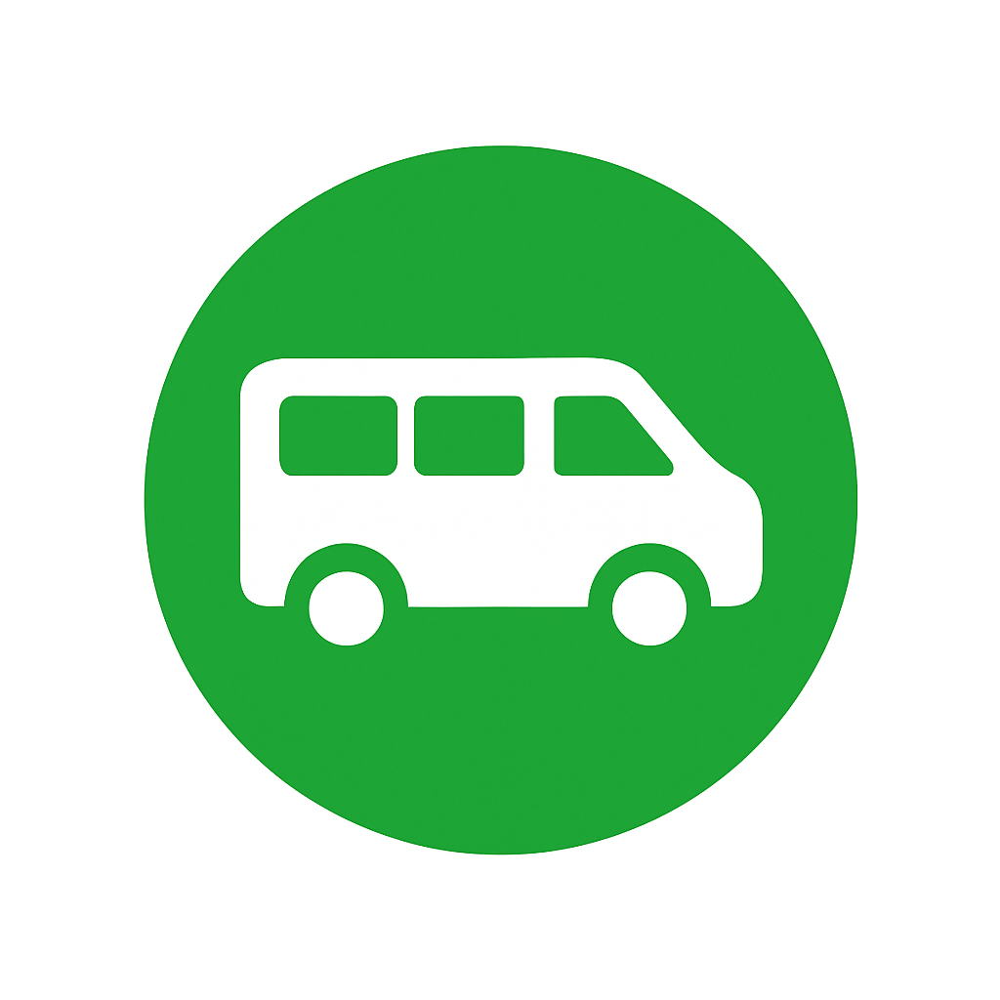
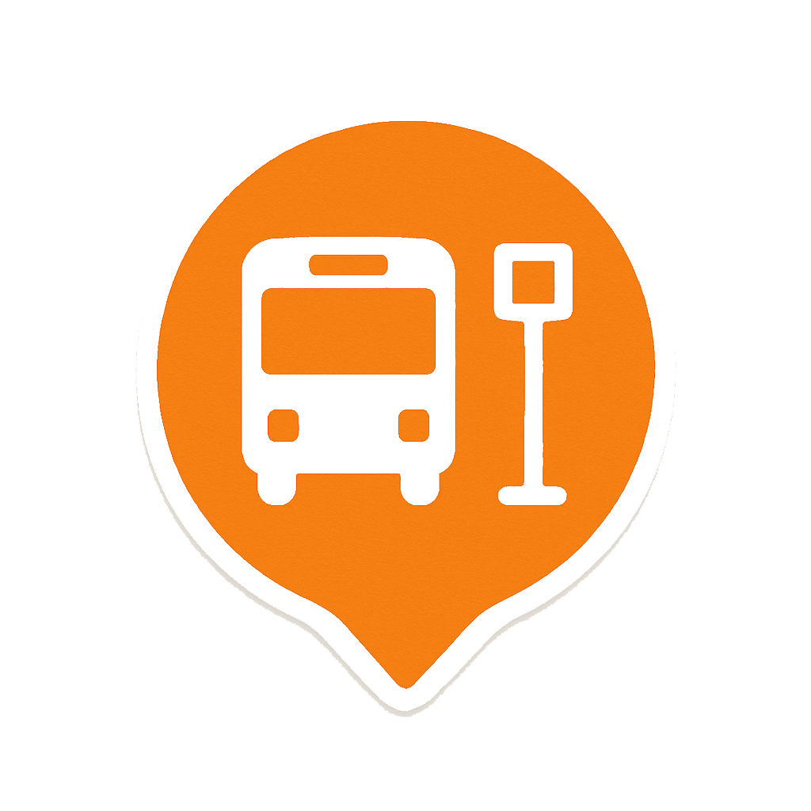
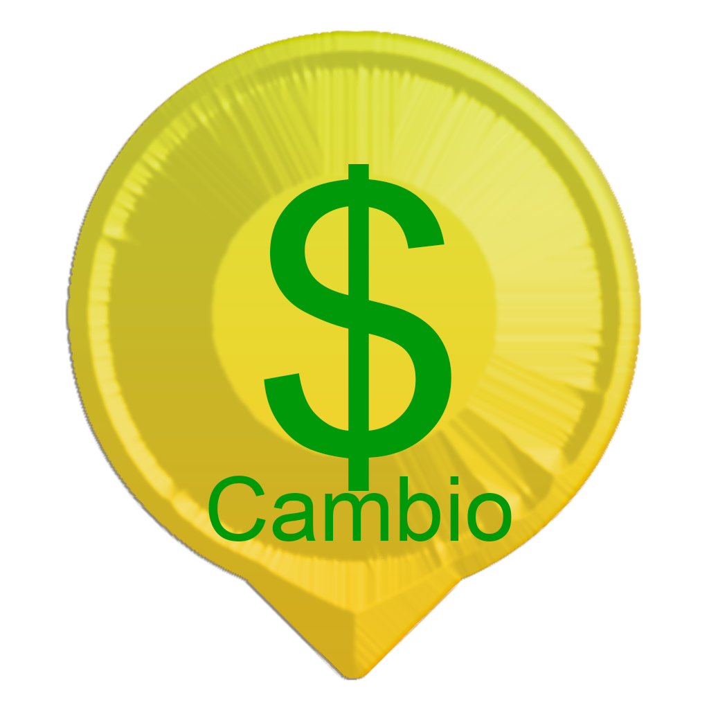

Controles do Mapa
Clique para mostrar/ocultar no mapa:
Pousadas
Praias
 Transporte Van
 Ponto de Ônibus
Rota da Escuna
 Feirinha de Artesanato
Feirinha de Artesanato
 Casa de Câmbio
💡 Dica: Selecione sua pousada acima para ver rotas personalizadas!